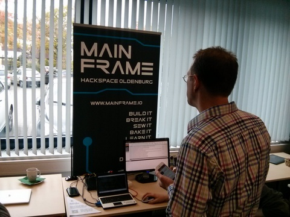
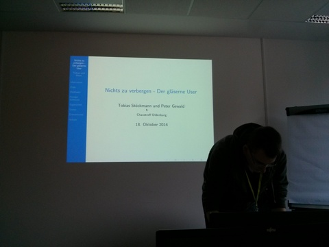
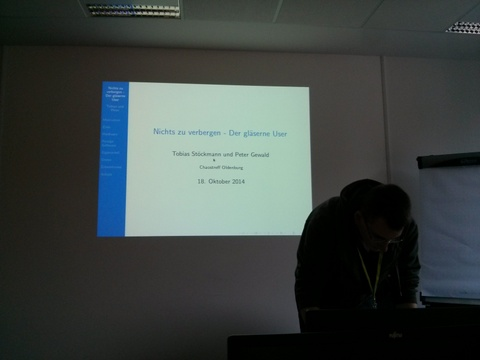

{% block content %}
{% filter markdown|typogrify -%}
Am 17. und 18. Oktober 2014 fand der 8. Linux-Informationstag statt.
Diesmal waren auch wir vom Chaostreff Oldenburg mit dabei. Wir haben dort einen WLAN-Accesspoint vorbereitet, mit dessen Hilfe die Besucher den Datenverkehr ihrer mobilen Geräte selbst begutachten können.

Ziel der Aktion war es, ein Bewusstsein für die Nutzung unbekannter Drahtlosnetze schaffen und Datenverkehr von Apps und Trackingdiensten zu visualisieren. Das Projekt wurde schließlich in einem Vortrag zusammengefasst und die wichtigsten Funktionen vorgestellt.
Die Quelltexte zu dem Demonstrator finet ihr hier https://github.com/ktt-ol/ccc-ol-lit
 Im Anschluss an obigem Vortrag fand eine Cryptoparty statt, in der u.a. GnuPG/PGP, CACert, Browserplugins, DNS-Crypt und TOR thematisiert wurden. Der Vortrag sowie die Cryptoparty waren deutlich besser frequentiert als der Demostand im Laufe der Veranstaltung.

{%- endfilter %}
{% endblock content %}
Im Anschluss an obigem Vortrag fand eine Cryptoparty statt, in der u.a. GnuPG/PGP, CACert, Browserplugins, DNS-Crypt und TOR thematisiert wurden. Der Vortrag sowie die Cryptoparty waren deutlich besser frequentiert als der Demostand im Laufe der Veranstaltung.

{%- endfilter %}
{% endblock content %}